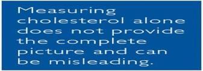
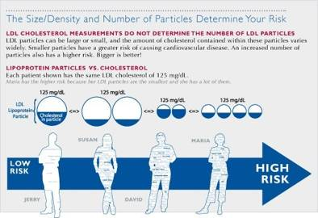
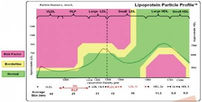

Exclusively at: Therapeutic Rehab Specialists Brandon & Lakeland offices
CARDIOVASCULAR TESTING
Spectracell’s LPP™ test is the most advanced lipoprotein test currently available. Unlike traditional cholesterol tests, Spectracell’s LPP™ directly measures the number of lipoprotein particles in all of the subgroups of LDL and HDL including Lp(a) and other critical risk factors as cited by the National Cholesterol Education Program, giving the most comprehensive and accurate assessment of cardiovascular risk for better determination of treatment guidance.
Do Cholesterol Numbers Really Assess Cardiovascular Risk?
Lipoprotein Particle Numbers Tell the Story
LPP™ Testing is essential to identifying at-risk patients
Up to 50 percent of those who have suffered heart attacks had “normal” cholesterol numbers. How can the large discrepancy between accurate diagnosis and standard cholesterol testing be prevented? Simply by testing the LDL (low density lipoprotein) particle numbers using the Lipoprotein Particle Profile™ (LPP™) from SpectraCell Laboratories.
Overview of lipoprotein particles and cholesterol
Cholesterol testing has historically been used as the standard indicator for cardiovascular disease classified as HDL (good) or LDL (bad). However, it is actually the lipoprotein particles that carry the cholesterol throughout the body, not necessarily the cholesterol within them, that are responsible for key steps in plaque production and the resulting development of cardiovascular disease.

Approximately 50 percent of people suffering from heart attacks have shown “normal” cholesterol numbers (NHLBI – The National Heart, Lung, and Blood Institute).
Now there is an advanced cholesterol testing technology which accurately measures both the density and number of lipoprotein particles. This test is the Lipoprotein Particle Profile™, or LPP™, from SpectraCell Laboratories.
Measuring the lipoprotein subgroups is the only way to evaluate new risk factors, which is crucial for an accurate assessment of cardiovascular risk – according to the National Cholesterol Education Program (NCEP).
NCEP new Risk Factors:
- Small, dense LDL: these atherogenic particles are easily oxidized and penetrate the arterial endothelium to form plaque
- Lp(a): this small, dense LDL is involved in thrombosis
- RLP (Remnant Lipoprotein): is very atherogenic, has a similar composition and density of plaque, is believed to be a building block of plaque and does not need to be oxidized like other LDL particle
- HDL2b: positively correlates with heart health because it is an indicator of how well excess lipids are removed
Why is it important to know lipoprotein numbers?
Cardiovascular risk increases with a higher LDL particle count. With a higher non-HDL lipoprotein count the probability of particle penetration of the arterial wall rises, regardless of the total amount of cholesterol contained in each particle. On average, the typical particle contains 50 percent cholesterol.
More than 30 percent of the population has cholesterol-depleted LDL, a condition in which a patient’s cholesterol may be “normal” but their lipoprotein particle number, and hence their actual risk, could be much higher than expected. This is especially common in persons whose triglycerides are high or HDL is low. In the population with a cholesterol-depleted LDL, there can be up to a 40 percent error in
risk assessment.

Lipoprotein Particle Profile™ (LPP™)
Providing a Complete Look at Lipoprotein Subgroups
SpectraCell’s LPP™ test is a proprietary technology originally developed at Texas A&M University that separates the lipoproteins in blood serum by density using analytical ultracentrifugation, the CDC gold standard for lipoprotein testing, then measures the particles photometrically.
LPP™ is used to determine accurate atherogenic risk assessments
Traditionally, the standard lipid panel calculates LDL from measurements of the other lipoproteins. In contrast, the LPP™ method presents values for all of the lipoproteins from direct measurement. SpectraCell’s LPP™ technology aids the physician in assessing a patient’s cardiovascular risk. With LPP™, a physician can begin to treat patients with atherogenic lipoprotein profiles before overt dyslipidemia becomes apparent.

References & Resources
- Chandra R, Macfarlane R. Remnant Lipoprotein Density Profiling by CsBiEDTA Density Gradient Ultracentrifugation. Analytical Chemistry. 2006;78:680-685
- Espinosa L, Macfarlane R, McNeal C. Method for Lipoprotein(a) Density Profiling by BiEDTA Differential Density Lipoprotein Ultracentrifugation. Analytical Chemistry. 2006; 78:438-444
- Nakajima K, Nakano T, Tanaka A. The oxidative modification hypothesis of atherosclerosis: the comparison of atherogenic effects on oxidized LDL and remant lipoproteins in plasma. Clin Chim Acta. 2006;367(1-2):36-47.
Packard CJ. Small dense low-density lipoprotein and its role as an independent predictor of cardiovascular disease. Curr Opin Lipidol. 2006;17(4):412-7 - Watanabe H, et al. Decreased high-density lipoprotein (HDL) particle size, prebeta-, and large HDL subspecies concentration in Finnish low-HDL families: relationships with intima-media thickness. Aterioscler Thromb Vasc Biol. 2006;26(4):897-902
- Bell N, Johnson J, Donahoe E, Macfarlane R. Metal Ion Complexes of EDTA as Solutes for Density Gradient Ultracentrifugation: Influence of Metal Ions. Analytical Chemistry. 2005;77:8165-8172
- Capuzzi D, Carey C, Lincoff A, Morgan J. High-density Lipoprotein Subfractions and Risk of Coronary Artery Disease. Current Atherosclerosis Reports. 2004;6:359-365
- Marcovina SM, Koschinsky ML. Evaluation of lipoprotein(a) as a prothrombotic factor: progress from bench to bedside. Curr Opin Lipidol. 2003;14(4):361-6
- Otvos J. Why Cholesterol Measurements May be Misleading about Lipoprotein Levels and Cardiovascular Disease Risk – Clinical Implications of Lipoprotein Quantification Using NMR Spectroscopy. J Lab Med. 2002;26(11/12):544-550
- Cupples A, McNamara J, Nakajima K, Ordovas J, Schaefer E, Shah P, Wilson P. Remnant-like particle (RLP) cholesterol is an independent cardiovascular disease risk factor in women: results from the Framingham Heart Study. Atherosclerosis. 2001;154(1):229-236
- Handbook of Lipoprotein Testing, 2nd Edition, American Association for Clinical Chemistry, Inc., Washington DC, 2000
- Masuoka H, et al. Association of Remnant-Like Particle Cholesterol with Coronary Artery Disease in Patients with Normal Total Cholesterol Levels. Am Heart J. 2000;139(2):305-310
- Seman L, et al. Lipoprotein(a)-cholesterol and coronary heart disease in the Framingham Heart Study. Clinical Chemistry. 1999;45:1039-1046
- Cantin B, Dagenais G, Després J, Lamarche B, Moorjani S, Lupien P. Associations of HDL2 and HDL3 subfractions with ischemic heart disease in men. Prospective results from the Quebec Cardiovascular Study. Arterioscler Thromb Vasc Biol. 1997;17(6):1098-1105
- Fortmann S, Gardner C, Krauss R. Association of small low-density lipoprotein particles with the incidence of coronary artery disease in men and women. JAMA. 1996; 276(11); pages 875-881
- Dahlen G. Lp(a) lipoprotein in cardiovascular disease. Atherosclerosis. 1994;108:111-126.